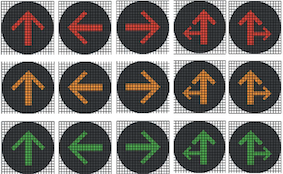
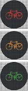
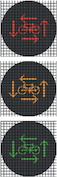
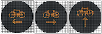
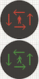
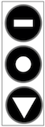
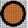

| Verkeerslicht | vast | Driekleurig systeem met cirkelvormige lichten |  | Li3R | de bestuurders moeten de driekleurige verkeerslichten opvolgen. | Art.61.1 | Li3P, LiFR, LiFV, LIVO, LiVV, LiOP |
| Verkeerslicht | vast | Driekleurig verkeerslicht met pijlen |  | Li3P | de bestuurders moeten de driekleurige verkeerslichten opvolgen. Het verbod of de toelating is beperkt tot de richtingen die door de pijlen aangegeven worden. | Art.61.1.4° | Li3R, LiFR, LiFV, LIVO, LiVV, LiOP |
| Verkeerslicht | vast | Fietsers lichten |  | LiFR | de fietsers en bestuurders van tweewielige bromfietsen moeten de driekleurige verkeerslichten met het silhouet van een fiets opvolgen. | Art.61.1.6° | |
| Verkeerslicht | vast | Fietsers lichten integraal groen kruispunt |  | LiFV | de fietsers en bestuurders van tweewielige bromfietsen - indien ze op het fietspad mogen rijden - moeten de driekleurige verkeerslichten opvolgen met het silhouet van een fiets. De lichten gelden gelijktijdig voor de dwarsrichting.
| Art.61.1.7° | Li3R, Li3P, LiVV, LiOP |
| Verkeerslicht | vast | Fietsers lichten oranje pijl |  | LiFO | wanneer het bijkomend oranjegeel knipperend verkeerslicht met een fietssilhouet brandt, mogen fietsers en bestuurders van tweewielige bromfietsen het rood of oranjegeel verkeerslicht in de richting van de pijl voorbijrijden. Zij moeten hierbij voorrang verlenen aan de bestuurders die op regelmatige wijze uit andere richtingen komen en aan voetgangers. | Art.61.1.9° | Li3R, Li3P, LiVO, LiVV, LiOP |
| Verkeerslicht | vast | Ontruimingspijl | | LiOP | de bestuurders moeten het kruispunt ontruimen. Het tegenliggend verkeer op de rijbaan die de bestuurders bij het links afslaan gaan verlaten, wordt tegengehouden door een rood licht. | Art.62 | Li3R, Li3P, LiVO, LiVV, LiFR, LiFP |
| Verkeerslicht | vast | Verkeerslicht boven rijstrook | | LiRS | de bestuurders moeten de verkeerslichten opvolgen die boven de rijstroken of andere delen van de openbare weg naar hen gericht zijn. | Art.62bis | |
| Verkeerslicht | vast | Voetgangerslichten | | LiVo | de voetgangers moeten de tweekleurige voetgangerslichten opvolgen. | Art.63.1 | Li3R, Li3P, LiFR, LiOP |
| Verkeerslicht | vast | Voetgangerslichten integraal groen kruispunt |  | LiVV | de voetgangers moeten de tweekleurige voetgangerslichten opvolgen. De lichten gelden gelijktijdig voor de dwarsrichting. | Art.63.5 | Li3R, Li3P, LiFR, LiFV, LiOP |
| Verkeerslicht | vast | Lichten voor geregelde diensten voor gemeenschappelijk vervoer |  | LiGDGV | de bestuurders van voertuigen van geregelde diensten voor gemeenschappelijk vervoer moeten de bijzondere verkeerslichten voor het regelen van het verkeer van voertuigen van geregelde diensten voor gemeenschappelijk vervoer opvolgen. Hetzelfde geldt voor de andere bestuurders die op de bijzondere overrijdbare bedding rijden. | Art.62 ter | |
| Verkeerslicht | vast | Oranje knipperlicht |  | LiOr | een oranjegeel knipperlicht betekent dat het verkeerslicht met dubbele voorzichtigheid mag voorbij gereden worden; het wijzigt de voorrangsregeling niet. | Art.64 | |